2D data
Explore one tissue section: colour it by type or gene, read the Lens, draw regions and gate cells.
On this page4
A 2D dataset is one tissue section. PointillViz places every cell or spot at the x and y position it was imported with, and the tabs on the left decide what the colours mean: cell types, niches, one gene, a pathway score, another measurement. The tissue stays the same; only its colouring changes.
Extra layers — tissue images, cell boundaries, transcripts — lay over it where the import made them available.
The 2D view is PointillViz's spatial workspace. Here the tissue can be moved, zoomed, fitted to the view and rotated, and hovering a cell shows its annotations and measurements.
The active tab, or a tool's Paint the map, colours the cells by the information you chose. Pin Focus Across Tabs keeps a group of cells highlighted while you switch between views.
Only the view changes, never the dataset.
Move, zoom and style
Move
Drag the tissue to move it. The arrow keys move it too, once the tissue has been clicked.
Zoom
Scroll to zoom around the pointer; + and − zoom around the middle of the view.
Style
The Style card in the corner of the view sets how large the cells are drawn and how opaque (solid or see-through) they are. Cell size adapts to the dataset when it opens; Reset style returns to those automatic values. Both settings are remembered per dataset.
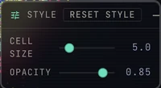
Fit and rotate
Fit
F, or the Fit button, shows the whole section again and undoes any rotation.
Rotate
Turns the section 90° clockwise; Shift-click turns it back. The angle is remembered per dataset.
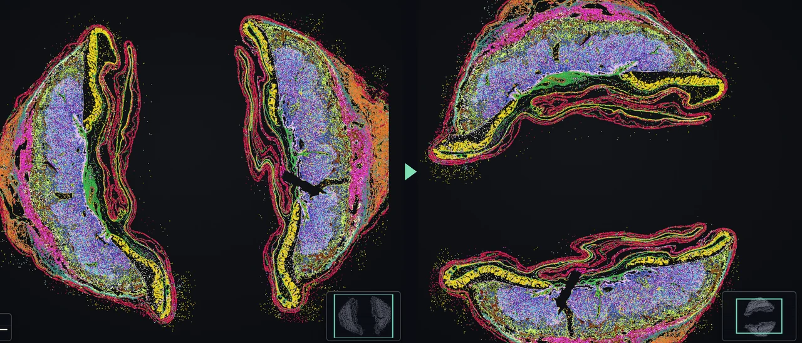
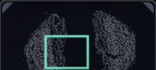
Minimap
The frame in the corner shows which part of the section is in view.
Inspect a cell
Hover a cell
Rest the pointer on a cell to open its tooltip—no click is needed. Where cells overlap, zoom in first.
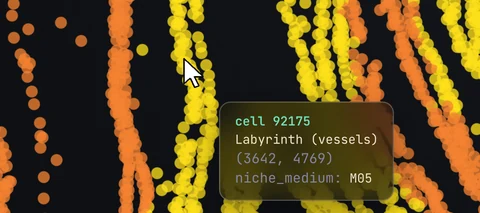
Cell and position
The tooltip begins with the cell’s number, cell type and x–y position in the import unit.
What the colours show
Then the active colouring: an annotation and its value, a gene’s expression, or a tool result. A gene not measured in that section reads not measured, never 0.
Colour by groups
The tab that paints
Every tab colours the same cells in its own way, and only one colouring is on screen at a time. A small dot on the tab strip marks the tab that paints right now, even while another tab is open. Switching tabs changes the colours, never the data.
Show or hide groups
In Types, Niches and Cat., each legend row is one group: its colour, its name, its number of cells and a thin bar for its share of the section. Click a row to hide that group; click again to show it. A hidden row is dimmed, and its cells disappear from the tissue. All and None switch every group at once; the search field narrows a long list.
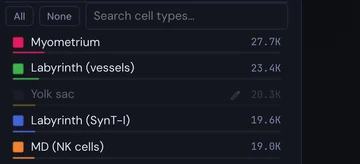
Recolour a group
Click the colour square at the left of a row to choose another colour. A picker opens; Apply keeps the new colour, Cancel the old one. The palette is saved with the dataset.
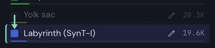
Rename a group
The pencil at the right of a row appears while the pointer is over it. Click it, type the new name and press Enter; Undo stays for a few seconds. The name is saved with the dataset, and the values stay as imported.
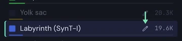
Colour by a gene
Pick a gene
Under Genes, type a name and choose it from the list; the cells take the colour of their expression. Only that gene is loaded, so even a 5,000-gene panel answers at once. The ↑ and ↓ keys step through the list.
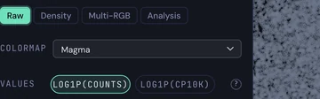
Three ways to draw it
Raw colours each cell by its own value. Density smooths the expression over the neighbourhood, so patterns show through sparse counts. Multi-RGB puts up to three genes on red, green and blue, so mixed colours mark where they overlap.
Scale and values
Colormap switches the colour scale (Viridis, Plasma, Inferno, Magma, Cividis). Values chooses between the stored counts on a log scale, log1p(counts), and counts first scaled to 10,000 per cell, log1p(CP10K), which evens out cells with more or fewer molecules. Pathways scores a whole gene list per cell the same way.
Keep a focus across tabs
Choose the cells
In Types, Niches or Cat., press None, then the rows to keep.
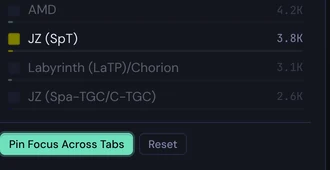
Pin Focus Across Tabs
keeps these cells highlighted in every tab; the rest fade. Press again to release. Showing or hiding rows updates the focus live.
Clear it
The header chip names the focus; × Clear focus or Reset ends it.
How faint the rest
Style then has two sliders: Focused cells opacity and Other cells opacity.
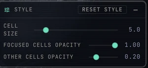
Paint results from tools
Find a tool
The Tools tab lists the built-in analyses and the community tools from the Tool Store.
Run it
Set the parameters and press Run; the result appears in the tool’s panel.
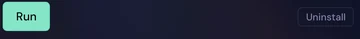
Paint the map
Colours the cells by the tool’s per-cell result, with its own scale. Cells without a value are drawn dim; the dataset is never changed.
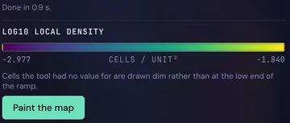
Float a panel
Undock a plot
Plots that live in a tab can leave it. Click ⧉ in the plot's head, or drag the head out of the sidebar: after a few pixels the panel comes loose and follows the pointer. A plot opened from the Tools gallery floats right away.
The tab keeps a slot that says where the panel belongs.
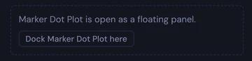
Move, resize, minimize
Drag the floating panel by its head to any place over the tissue; pull a corner to resize it. Several panels can be open side by side.
The › button in the head minimizes the panel to a rail at the right edge of the viewer. Hover the rail tab for its name; click it to bring the panel back exactly as it was. A newly opened panel sends the panels it would cover to the rail; panels dragged aside stay open.
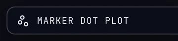
Dock it back
Three ways: press ⇤ in the floating head; press Dock … here in the tab's slot; or drag the panel over the slot until it reads Drop to dock, and release. The panel returns with its genes, settings and size.
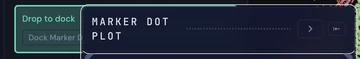
Understand scale and units
The scale bar
Shows a round length and adapts at every zoom; from 1,000 µm it reads in mm.
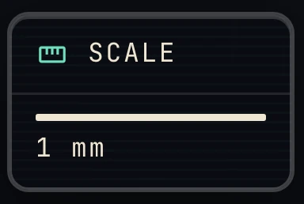
The unit comes from the import
µm, mm or pixels: the same unit for the tooltip and every distance the viewer reports.
Nothing is converted
Pixels never become micrometres. A wrong unit is corrected in the Units field at import.
The tabs sort the imported information by kind of data and by question. Which tabs appear depends on what was mapped at import, so the viewer adapts to each dataset on its own.
Every tab looks at the same cells in the same place. Tabs can colour the cells by an annotation, a gene or a computed value, add a layer such as an image or transcripts, or open plots and analyses, and many combine several of these functions. Switching tabs changes the view and the question, never the imported data.
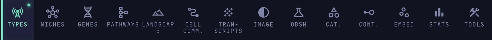
Types
Paints the mapPlot
Appears when a cell-type column was mapped at import; Markers also needs gene expression.
Two views
At the top of the tab, Cells shows the legend of cell types and Markers the marker dot plot. Click to switch; the tissue keeps its colours.
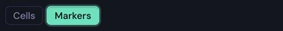
Cells: the legend
One row per type: click it to hide or show the type, the colour square to recolour, the pencil to rename (see Colour by groups above).
Pin Focus Across Tabs keeps the shown types highlighted when you move to another tab (see Keep a focus across tabs above).
With a cell-type hierarchy the rows form a tree: Color by picks the level that paints the tissue, Expand and Collapse open the groups.
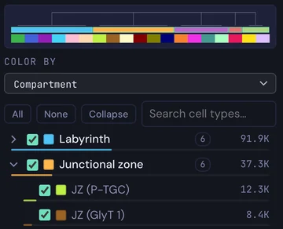
Markers: pick the genes
Add a gene. Type its name into Search and add a gene… and choose it from the list, or press Top markers to add the twelve most widely expressed genes at once. Up to thirty genes fit.
Remove a gene. Each gene is a chip below the search field: press its × to remove it, or Clear to remove all.
Genes are the columns of the plot, so adding or removing one changes the columns. The rows are always all cell types present in the dataset, the largest first.
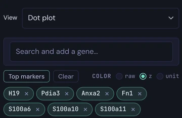
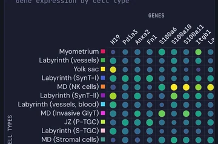
Hover a dot
Hover a dot to read its numbers: the gene and the cell type, the mean expression (log1p CP10K), the share of cells of that type that express the gene, and how many cells the type has.
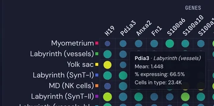
Click a type or a gene
Hover a type name at the left for its cell count; click it to flash those cells on the tissue.
Click a gene name at the top to open that gene in Genes, coloured on the tissue.
Radar profiles
Set View to Radar profiles for one profile per type over up to eight genes, as the share of expressing cells or the relative mean. Hover a profile to flash its type.
Niches
Paints the mapPlot
Appears when a niche annotation was mapped at import. Several niche annotations can be mapped; the tab then switches between them.
Two views
At the top, Cells shows the niche legend, while Enrichment compares the cell type composition of the niches. If several niche annotations were imported, Resolution selects which level, such as coarse, medium or fine, is used to colour and analyse the tissue.
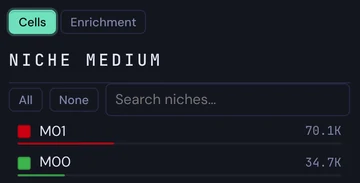
Cells: the legend
One row per niche: click it to hide or show the niche, the colour square to recolour, the pencil to rename (see Colour by groups above). Hovering a row lights its cells on the tissue.
Pin Focus Across Tabs keeps the shown niches highlighted in other tabs (see Keep a focus across tabs above).
Enrichment heatmap
Rows are niches, columns cell types. Red means a niche holds more of a type than chance, blue less.
Click a niche name to flash that niche on the tissue, a cell-type name to flash the type. ⧉ floats the plot beside the tissue (see Float a panel above).
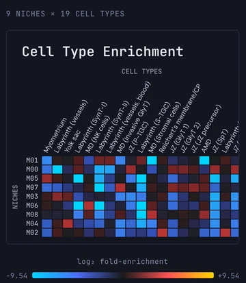
Hover a field
Hover a square for its numbers: the niche and the cell type, the log2 fold-enrichment, the cells of that type in the niche as a count and share, and how many would be expected by chance.
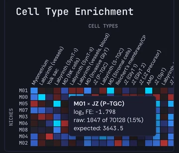
Radar profiles
Set View to Radar profiles: one profile per niche over the cell types. Measure chooses what the spokes show (share of the niche, share of the type, or enrichment), Layout draws the profiles overlaid or one by one; Profiles and Spokes tick the niches and types to include. Save SVG and Save values export the plot.
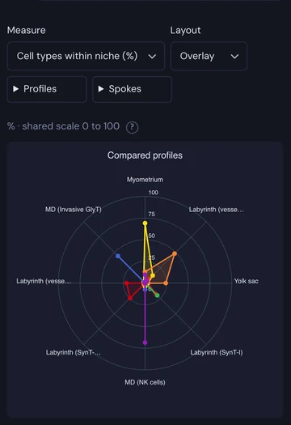
Genes
Paints the mapAnalysis
Appears when gene expression was mapped at import.
Pick a gene
Type into Search gene… and click a row; the list is sorted by the number of expressing cells, and ↑ ↓ step to the neighbouring genes. The tissue shows the gene's expression, cells without it in dark grey; hovering a cell adds the value to the tooltip.
Colormap changes the palette. Values switches between the values as stored and log1p(CP10K), where every cell is first scaled to 10,000 counts. The Selected gene box gives the number of expressing cells and the maximum; × clears the gene.
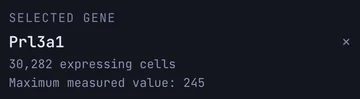
Density and Multi-RGB
Density paints a smoothed map of where the gene is expressed; Smoothing radius sets how far it spreads.
Multi-RGB mixes three genes: click R, G or B, then pick a gene for each; the channels add up on the tissue.
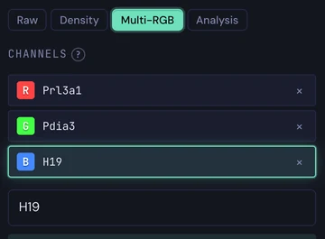
With a gene picked, Open Violin Plot compares its expression across cell types or niches.
Analysis
Analysis › Differential Analysis: choose a Category (cell types, niches or a custom category), then Group A and Group B, and press Run differential expression.
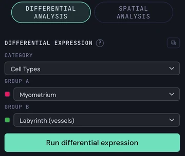
The result lists the significant genes with a volcano plot and split distributions; FDR < and |log2 FC| > filter the list. Click a gene row or a point in the volcano to add that gene to the distributions; ◉ paints it on the tissue.
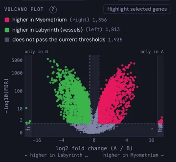
Spatial Analysis ranks genes by how spatially structured their expression is: Calculate spatial gene patterns.
Pathways
Paints the map
Appears when gene expression was mapped at import; the gene sets come with PointillViz, no extra file is needed.
Pick a gene set
Hallmark holds the 50 MSigDB Hallmark sets, Reactome and GO search their databases online, Mine keeps your own. Search by name or by a gene, then click a set: its genes appear below, measured ones in colour and missing ones greyed, and fill the gene box.
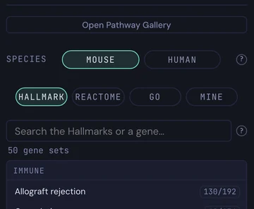
Species (Mouse / Human) is read from the dataset and can be switched.
Score it
Press Score: every cell gets a module score — its signature genes against matched control genes — painted on a diverging scale. Colour scale fixes the scale at ±1 or stretches it to the data (Auto); Clear returns the tissue to grey. The status line says how many genes were used or are missing.
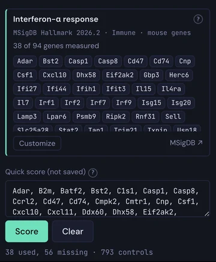
Your own sets
Mine › + New pathway: name it, type or paste genes, Save pathway; genes not in the dataset are tagged unavailable. A Hallmark set can be customised as a copy, a Reactome or GO set kept with Save to My Pathways. Any list pasted into Quick score is scored without being saved. Saved sets stay in this browser.
Pathway Gallery
Open Pathway Gallery shows a small map for every set at once; Filters restrict it to the visible cells, set the colour scale and the category. Click a card to score that set on the tissue.
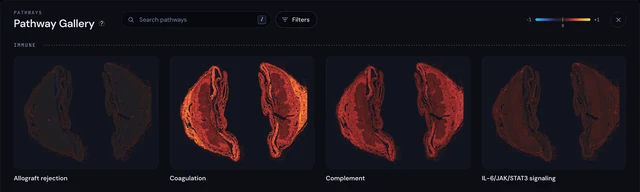
Landscape
View
Appears for 2D data with gene expression and a categorical annotation.
A 2.5D view
The section tilts: position stays flat, the chosen gene's expression rises as column height, and the colours come from a categorical annotation. Selection tools are off here; click any other tab to return to the flat view.
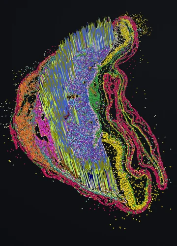
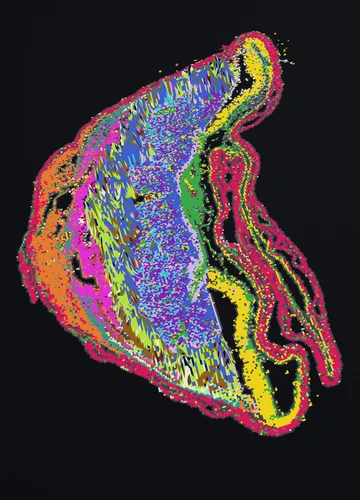
Colour and height
Color by picks the annotation; Height by a gene — search and click, as in Genes; it starts with the gene picked there. Height scale stretches the columns, Scaling switches between log1p and linear; heights are clamped at the 99th percentile. Reset camera returns the view to its starting angle.
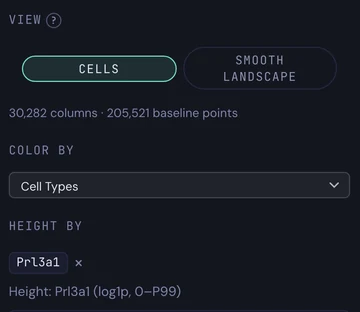
Cells or smooth
View › Cells draws one column per expressing cell, Column width sets how wide. Smooth Landscape draws a smoothed surface instead; Smoothness sets how far it averages.
Cell Comm.
AnalysisPaints the map
Appears when gene expression and cell types were mapped at import; the ligand–receptor pairs come with PointillViz, for mouse and human.
Find a pair
The list holds every ligand → receptor pair the gene panel can measure, with the sender → receiver cell types that express it most specifically; Low expression flags weak pairs. Sort orders by specificity or by expression.
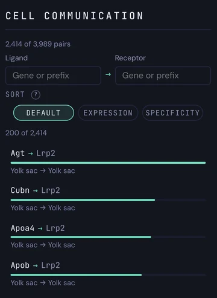
Type a gene or a prefix into Ligand or Receptor to filter; Show more extends the list.
Score a pair
Click a pair. Measure › Co-variation gives Moran's R with z and p — do ligand and receptor rise together in space?
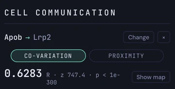
Proximity gives the share of receptor-positive cells within Within of a ligand-positive cell; drag the slider or the curve to change the radius.
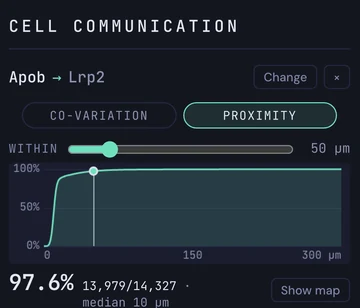
See it on the tissue
Show map paints the pair: each cell's share of the co-variation, or the receptor cells coloured by their distance to the nearest ligand cell; Colormap picks the palette. The sender × receiver heatmap (Top 8 / Top 16 / All) says which cell types carry the signal. Change returns to the list, × clears.
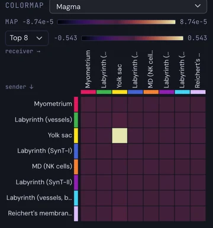
Transcripts
Layer
Appears when transcript coordinates were mapped at import.
The tab draws single molecules of chosen genes over the cells, without recolouring them. How to use it is described on the Transcripts page.
Image
Layer
Appears when a tissue image was mapped at import.
The tab chooses which images and channels show, with colour, black and white point and gamma per channel. How to use it is described on the Images page.
Obsm
Paints the map
Appears when a dense per-cell matrix was mapped at import, for example protein intensities.
Pick a channel
Choose the matrix in the menu, then click a channel; the tissue shows it from its 1st to its 99th percentile. Search channels… filters the list, and the number at the right is each channel's 99th percentile. A matrix with thousands of channels lists 200 rows around the chosen one; the search finds the rest.
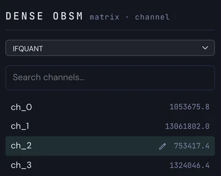
Hover a cell
Hovering a cell adds the channel's value to the tooltip, under the cell's type and position.
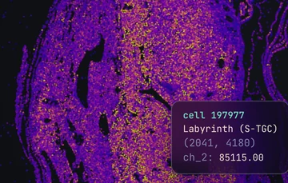
Rename a channel
Hover a row and click its pencil: type the new name, Enter saves it with the dataset, Escape cancels; Undo appears for a few seconds.
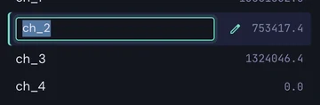
Cat.
Paints the map
Appears when an extra categorical column was added in the import wizard.
Pick a column
The menu at the top lists the extra columns; each paints the tissue and brings its own legend. Hovering a cell adds its category to the tooltip.
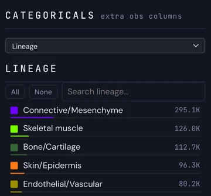
Show or hide a category
Click a row to hide its cells — the row dims — and click again to show them; All and None switch every category, the search field narrows the list. Hovering a row lights its cells on the tissue.
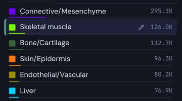
Recolour a category
Click the colour square: a popover offers twelve colours and a free colour picker. Apply saves the colour with the dataset, Cancel keeps the old one.
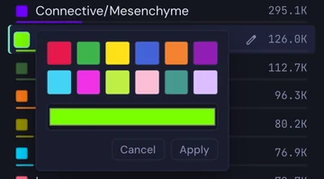
Rename a category
Click the pencil of a row (or press F2 on it), type the name, Enter saves, Escape cancels; Undo appears for a few seconds. The new name is saved with the dataset and used everywhere, exports included.
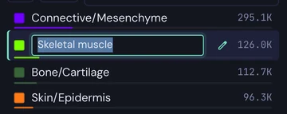
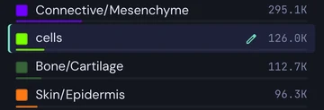
Pin the focus
Pin Focus Across Tabs keeps the shown categories highlighted in the other tabs; Reset clears the focus and shows every category again (see Keep a focus across tabs above).
Cont.
Paints the mapPlot
Appears when numeric per-cell columns were mapped at import, such as transcript counts or cell area.
Choose the value
Value picks the column and paints it on the tissue, from its 1st to its 99th percentile; hovering a cell adds the value to the tooltip. Group by picks the grouping for the plot below: cell types, niches or a custom category.
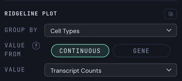
Value from a gene
Value from › Gene: search and click a gene; it takes the place of the column on the tissue and in the plot, with cells that do not express it dimmed. Shape from draws the ridges from the expressing cells or from all cells.
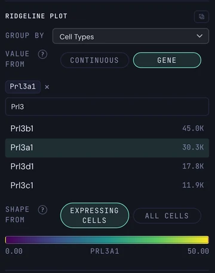
The ridgeline plot
One ridge per group, the largest 25, each scaled to its own peak on a shared axis. Search groups… narrows the list; ⧉ floats the plot (see Float a panel above).
Hover and click a ridge
Hover a ridge for its mean and its number of cells. Click it to focus that group: on the tissue the other cells fade and a chip at the top names the focus, in every tab; click the ridge again, or × Clear focus, to release it.
Stats
Analysis
Always available. It stacks summaries of the loaded cells; each block can float beside the tissue with ⧉ (see Float a panel above).
Cell-Type Distribution
One bar per cell type with its count and share. With more than 25 types, Top 25 and All cell types switch the list.
Sections
The cell count per section. With several sections, Section comparison picks a Feature and the Sections to compare, one bar per section.
Categorical Relationship
Click the heading to open it. Choose Left field and Right field (cell types, niches, categories or sections), Population and Display, then Compute.
Ribbons show how the cells of one annotation spread over the other. Hover a ribbon or a block for its cells — they are outlined on the tissue; click to pin the highlight.
Colocalization Matrix
Choose KNN with K neighbours or Radius with R, then Compute. Each square is the share of cells of type A that have a type-B neighbour.
Hover a square for its value and the curve over every K; click it to pin the curve and flash both types on the tissue. While Stats is open, clicking a cell on the tissue outlines its neighbourhood.
Embed
View
Appears when an embedding such as a UMAP was mapped at import.
Show the embedding
Show on UMAP replaces the tissue by the embedding, in the colours of whatever tab paints; Back to spatial returns. Embedding picks one when several were mapped. A lasso drawn on the embedding hides the unselected cells; the selection is the same in both views.
The MiniMap
View setup decides what the main view and the small MiniMap show, Spatial or UMAP. The MiniMap follows the main colouring until its pin freezes it; × hides it. Drag a box on it to spotlight those cells in the main view; a click clears them.
Tools
Analysis
Always available.
A gallery of every analysis available for this dataset, each as a card that opens it, with the community tools below — the installed ones and the ones the Tool Store offers. See More tools further down this page and the Tool Store page.
The toolbar contains actions that can be used across tabs. It lets you navigate and orient the tissue, select regions, open spatial analyses, toggle optional layers, and capture or export the current view. These actions work with the colouring and focus already on the map, so they can be combined with information from any tab.
Available controls depend on the imported data. They may change the view or calculate results, but never modify the original dataset.
Transcripts
Layer
Appears when transcript coordinates were mapped at import; the + beside it adds a transcript layer to the open dataset.
Draws single molecules of chosen genes over the cells. How to use it is described on the Transcripts page.
Lasso
Selection
Always available: press Lasso or P.
Choose a shape and draw
The shape menu opens with the tool: Freehand, Rectangular or Circular Selection. Freehand: press and drag around the cells and release to close the shape. Rectangle: drag from one corner to the opposite one; circle: drag from the centre outward. The map does not pan while you draw.
Read the region
The selected cells keep their colours, every other cell turns grey, and the Region panel opens on the right: the number of cells, the Cell-type composition with each type's share of the region and its log2 enrichment against the whole section, and the Top genes that differ most, on log1p(CP10K) or Raw values.
Adjust the shape
Drag inside the shape to move it, drag its handles to resize it, and on a freehand shape drag the outline itself to reshape that stretch. The numbers update when you release; Escape during a drag undoes it.
Compare two regions
Draw region B to compare freezes region A; draw B the same way (it shows in orange), then press Compare regions. The Region comparison window sets the two side by side: Cell types, Niches, Diff genes — a Wilcoxon test with a volcano plot, run when the tab is opened — Obsm and Continuous.
Cmd/Ctrl+C copies region A and Cmd/Ctrl+V pastes it as region B, ready to move.
Close
× in the panel, the Lasso button, P or Escape end the selection. Export data can save the region membership and its geometry; Freeze in the Lens sends the cells in view to the same panel.
Layout
View
Appears when the dataset holds more than one section.
Show, hide, focus
The Section layout popover lists every section with a checkbox, a colour and its cell count. Untick a section to hide its cells; click a name to focus it — the other sections dim — and click it again to release. All visible, Hide all but first and Clear focus act on all sections at once.
Nothing is saved: a dataset opens with every section visible.
Gradient
Analysis
Always available for 2D data: press Gradient or G.
Draw the geometry
Line: drag from A to B. Curve: click points one by one or sketch by dragging; double-click or Enter finishes it, Backspace removes the last point. Polygon: click the vertices and click the first one, or double-click, to close. The map does not pan while the tool is armed; drawing again replaces the shape.
Choose what to measure
Feature picks a cell type, gene, niche or continuous value — a group menu, All features, and a search. Metric shows the Mean, % expressing or Both; Bins and Smooth set the resolution and Band how far from the line cells still count. A polygon adds Radius and Direction (Outer / Inner).
Read the profile
Profile › On tissue draws the curves beside the line — the mean in green, the share expressing in orange; In panel plots them under the controls, where hovering a bin gives its values and cell count. The cells themselves are never recoloured.
Close with ×, the button, G or Escape. Export data can save the profile.
Lens
Analysis
Always available: press Lens or L. Pan and zoom keep working while it is on.
What is in view
The Under the lens panel recounts the cells on screen at every move. In view gives their number and share of all cells; Composition lists the top types of the painted annotation with their share in view, their log2 enrichment and z against the whole section (Top sets how many). With a value painted it shows a histogram and the mean, median and share above zero, in view against all.
Loupe, callouts, freeze
Loupe adds a circle under the cursor and lists the types inside it; its radius follows the zoom until the slider sets it. Callouts labels enriched types directly on the tissue. Freeze sends the cells in view to the Region panel, as if drawn with the Lasso.
× or L closes the Lens; it never recolours the cells.
Gating
Analysis
Enabled when at least two measurable channels exist: genes, continuous columns or obsm channels.
Pick two channels
For X and Y choose the source — Gene, Obs or a matrix — the channel, and a transform (linear, log1p, asinh). The panel opens with two usable channels already picked, and the plot shows the cell density.
Draw the gate
Rect: drag on the plot; drag an edge or corner to resize, drag inside to move; an edge pushed to the border becomes unbounded. Quad: drag the cross and click a quadrant. Poly: click the vertices and click the first one to close. Full widens the axes to every value.
Read the result
The gated cells keep their colours on the tissue and the rest fade (Tissue switches this off); hovering a cell says whether it is in the gate. The verdict line gives the count, the share and the best-matching type with precision and recall; the table lists the top types in the gate — click one to compare against it — and By splits the gate by niche or section.
× closes the panel; the gate is remembered while the dataset stays open.
Image
Layer
Appears when a tissue image was mapped at import; the + beside it adds one.
Chooses the background image and its channels. See the Images page.
Boundaries
Layer
Appears when cell boundaries were mapped at import; the + beside it adds them.
Draws the outlines of the cells. See the Polygons page.
Fit
View
Always available (F).
Fits the section to the window (see Fit and rotate above).
Capture
Export
Always available.
Capture view (C) keeps the current view; Export… (S) saves one as a screenshot or several as the panels of a figure. See the Exporting page.
Export data
Export
Enabled once a dataset is open.
Exports cell-level data and derived results. See the Exporting page.
Rotate
View
Appears for 2D data.
Rotates the view by 90°; Shift-click rotates the other way (see Fit and rotate above).
Theme
View
Always available: press the button or T.
Dark or light
Switches the whole viewer between the dark and the light theme and repaints the tissue. The choice is remembered in this browser.
One advantage of PointillViz is that the same hypothesis can be followed through different tools and representations.
The following example uses Prl3a1, a placenta-specific prolactin-family gene expressed predominantly by trophoblast cells of the junctional zone, to show how these connected perspectives complement one another and help identify the clearest visualization.
The hypothesis: Prl3a1 marks the junctional-zone trophoblast niche. Press a way to see it.
Paint it

- Genes
- Prl3a1
- Niches
- junctional-zone trophoblast niche
- Pin Focus Across Tabs
- other cells at 5 %
Left, every cell is coloured by its Prl3a1 count on a log scale: dark for none, yellow for the most. Right, the same lobe with one niche kept at full strength and every other niche faded to 5 %. The two patterns lie on top of each other.
Count it per niche

- Genes
- Prl3a1
- Open Violin Plot
- grouped by Niches
One violin per niche, log-scaled expression on the y axis, with the quartile box, the median line and the mean dot. In the junctional-zone trophoblast niche 58 % of the cells express the gene and the mean is 9.5 counts; in every other niche fewer than 8 % express it and the mean stays below one count.
Raise it

- Landscape
- Color by: Niches
- Height by: Prl3a1
- height 10×, log1p
- drag to tilt
Colour by niche, and raise each cell by its Prl3a1 expression. The green columns of the junctional-zone trophoblast niche stand up out of the tissue; the red niche beside it (M01) rises too, but less, and the rest lies flat.
Keep the strongest cells

- Genes
- Prl3a1
- value window: 40 – 245
- Pin Focus Across Tabs
- Niches
Under the colour scale, the value window keeps only the cells in a range. Set the lower limit to 40 and 2,395 cells stay lit. Pin that focus, open Niches, and the cells that remain are green: the colour of the junctional-zone trophoblast niche. A window on one gene's scale can be pinned like a category.
Keep or hide the niche

- Niches
- junctional-zone trophoblast niche
- Pin Focus Across Tabs
- Genes
- Prl3a1
Pin the niche as focus and paint the gene. Left, the niche kept and everything else at zero: nearly all the colour stays. Right, the opposite, the niche hidden and everything else kept: almost no colour is left.
Draw around them

- Genes
- Prl3a1
- Lasso
- draw along the expressing cells
- Composition by: Niche Medium
Paint the gene, press Lasso and draw by hand around the cells that light up. The Region panel reads what was caught, 26,159 cells, and can group them by niche. 62 % of them belong to the junctional-zone trophoblast niche, four times its share of the whole section; the niche next to it takes most of the rest.
Rank it
- Tools
- Spatial gene patterns
- Calculate
- Prl3a1
- Annotation match
Spatial gene patterns scores every gene by how strongly its expression clusters in space: Prl3a1 ranks first of 3,255 (Moran's I 0.74). Its hotspot is then compared with every annotation. Best match: the junctional-zone trophoblast niche. 83 % of the hotspot cells lie in it, it covers 54 % of the niche, and the overlap is 5.7 times what chance would give.